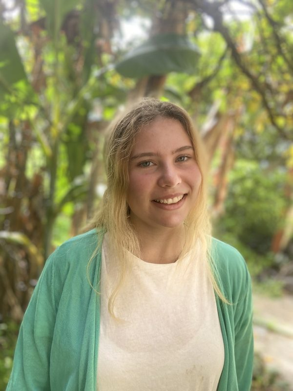

Meet the organisers
Four different paths, one shared wish: to get more people coding in Python.
-

Ana Machado
Physical Oceanography
Researcher · FCUL
Between Aveiro and Lisbon, she has a degree in Meteorology and Physical Oceanography and a PhD in Physical Oceanography. She works with numerical ocean models in Fortran, running on HPC, and uses Python to prepare and analyse the data — and in the classes she teaches.
>>> ana_machado.favourite_editor 'vi' -

Ana Sofia Sousa
Engineering Physics
PhD student · IST
Originally from Valongo, she has lived in Lisbon for seven years. She is doing a PhD in Nuclear Science and Technology at Instituto Superior Técnico. She is president of Young Minds and represents Portugal at NuFFER, the European forum of young researchers in nuclear physics.
>>> ana_sofia.number_of_books ~250 -

Diana Geirinhas
Biological Engineering
Master's student · IST
She studies at Instituto Superior Técnico, where she is doing a master's in Biological Engineering. Outside class, she splits her time between reading, writing, drawing and painting — and now also helping the PyLadies Lisboa community grow.
>>> diana.pet 'a cat who adopted her!' -

Teresa Cutelo
Economics · Nova SBE
Master's in Finance · MBA in Data Science
She discovered Python as her gateway into programming and hasn't stopped since. Born and raised in Lisbon, she believes in lifelong learning and in diverse paths into tech — and wants to build a space in her city where everyone feels at home.
>>> teresa.ideal_recipe ['sharing', 'community', 'Python']